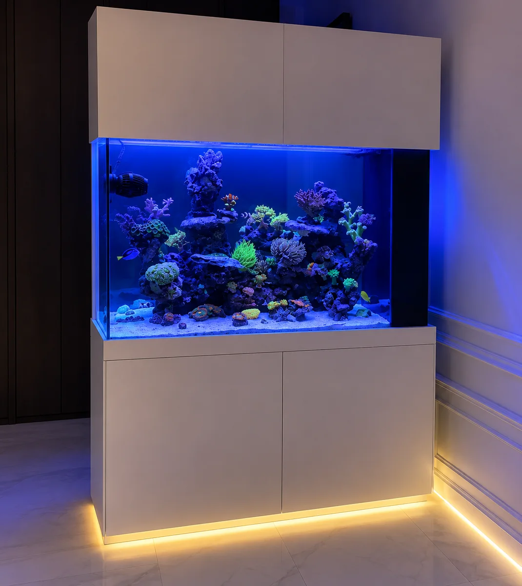
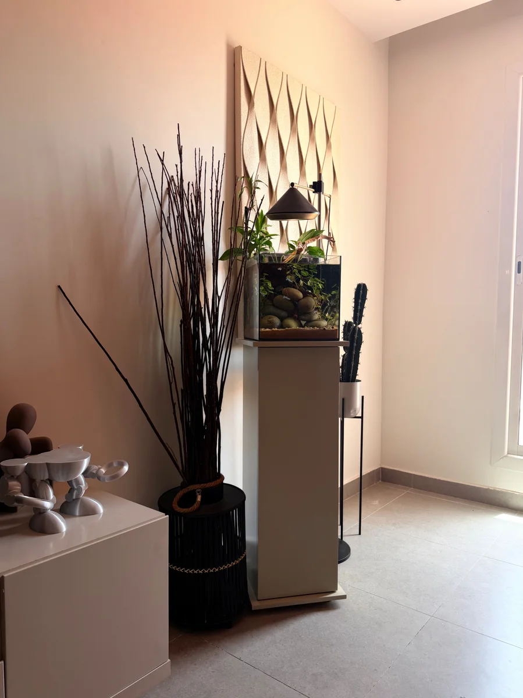

نوع النظام
حوض بحري مرجاني بحسب وصف الأرشيف.
تقدر تستكشف المنتجات وتحفظ تصميم حوضك. السلة والشراء غير مفعّلين في هذه النسخة.
استكشف المتجر افتح مسوداتيبحري مرجاني / من الأرشيف
إضاءة بحرية تمنح التكوين المرجاني حضوره. مشهد تتغير قراءته بين اللقطة الكاملة والتفاصيل الصغيرة.

المواصفات واردة في الأرشيف، وقد تختلف السعة الفعلية بعد التجهيز. ليست عرض سعر أو مواصفات تنفيذ جديدة.
ما وراء التكوين
هنا تصبح الإضاءة جزءًا من التكوين. يتيح عمق المشهد قراءة الصخور والمرجان على مستويات، بدل رؤية سطح واحد.
حوض بحري مرجاني بحسب وصف الأرشيف.
توزيع صخري ومساحات للمرجان تُقرأ من أكثر من زاوية.
اختيار الإضاءة والفلترة والتبريد يحتاج مراجعة مستقلة حسب المقاس والمحتويات.
من الإلهام إلى التصوّر
دوّن نوع الحوض والمكان والمقاسات التي تفكر فيها، واحتفظ بموجز لتطويره.
جهّز موجز مشروعك
المشهد التالي نهر صغير